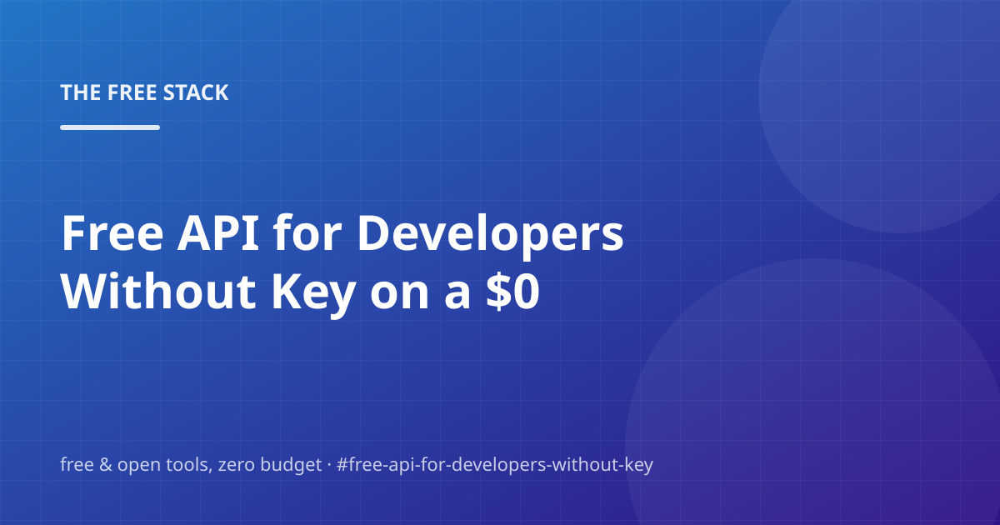

Free API for Developers Without Key on a $0 Budget: An Honest Walkthrough

Let's be honest: the internet is full of posts that pretend free api for developers without key is complicated. It isn't. What's actually complicated is separating the free options that hold up from the free options that quietly become $20/month. That's what this post digs into.
We'll walk through Hacker News Search API, Mastodon API, Google Search Console, and Github Actions Cron — and finish with the questions people actually ask, so you can check before you buy anything. You shouldn't have to buy anything.
Hacker News Search API
First, the thing that actually matters: Algolia runs a free, public search API over the entire Hacker News corpus.
In practice that means: Search stories, comments and users by text, author, time range or points — perfect for a 'what developers are reading' widget on a blog, and a fine read-only data source for research tools like this one.
For a personal project or side business, this covers you without breaking a sweat.
Mastodon API
Skip the fluff and start here: Mastodon's API is free and fully documented — any instance lets you register an app and post programmatically.
In other words: Create an app in your instance's developer settings, exchange it for a token, and the REST API handles statuses, follows and search. Because the whole platform is open source and federated, posting to it costs nothing and can point at an instance you run yourself.
The links in the sources section go straight to the primary docs.
Google Search Console
Start with the basics. Google Search Console is free and it is the single most valuable SEO tool there is.
In practice that means: Verify the site (a file or DNS record — both free), submit the sitemap, and you get the queries that actually bring people, the pages that rank, and indexing problems caught early. Nothing on a paid SEO stack replaces this data, and it costs nothing.
No signup wall, no credit card — just a README and some patience.
- Add the site property and verify with a DNS TXT record or verification file
- Submit sitemap.xml under Sitemaps
- Check Performance weekly — note the queries worth writing more about
Github Actions Cron
Worth spending ten minutes on: GitHub Actions supports cron-scheduled workflows, and this repo runs its blog on exactly that — free, with no server.
In other words: A YAML file with a cron expression is a scheduler: the engine wakes up, researches, writes, publishes, and commits the result. Public repos get unlimited minutes, and the same workflow file gives the owner a one-click 'run now' button in the Actions tab.
Keep it this simple and you'll be ahead of most tutorials out there.
- Add on: schedule: - cron: '17 6 * * *' to a workflow
- Checkout the repo and run the engine in the job
- Commit generated content so the static host deploys it
Frequently asked questions
Can I keep this free forever, or is it a trial?
Algolia runs a free, public search API over the entire Hacker News corpus. Treat that as the working assumption and re-check the docs once a quarter.
How much do I need to know before trying free api for developers without key?
Google Search Console is free and it is the single most valuable SEO tool there is. Treat that as the working assumption and re-check the docs once a quarter.
What are the real limitations of free api for developers without key?
The honest answer: Mastodon's API is free and fully documented — any instance lets you register an app and post programmatically. The free tier is the product, not the teaser — but the paid tier exists for when you need slas, support or volume.